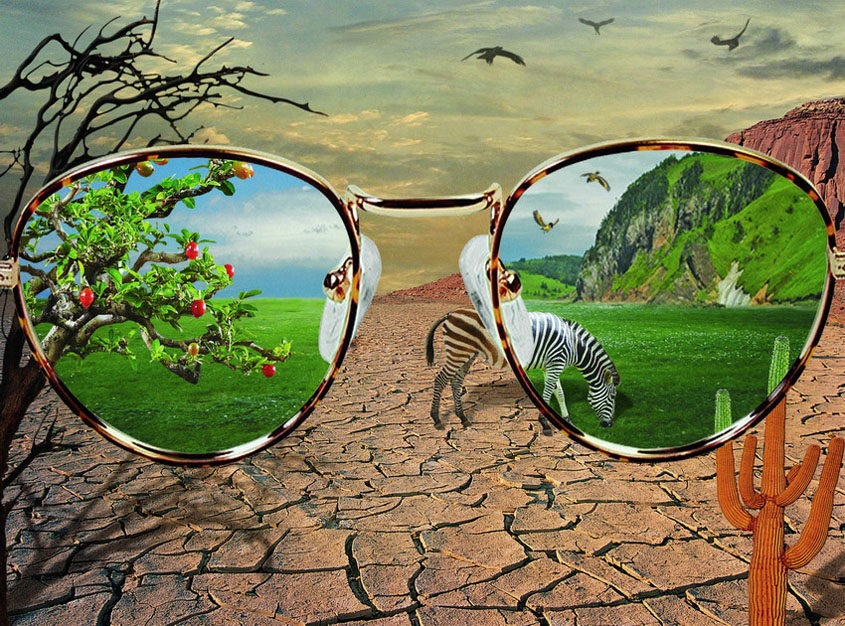
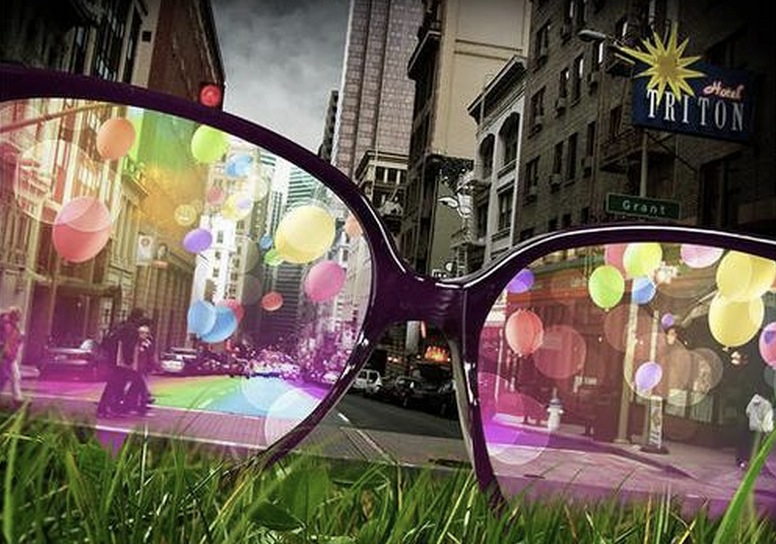
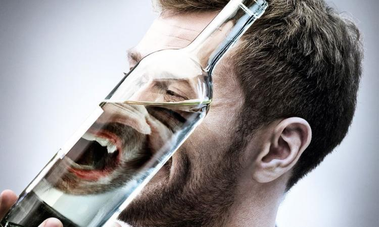
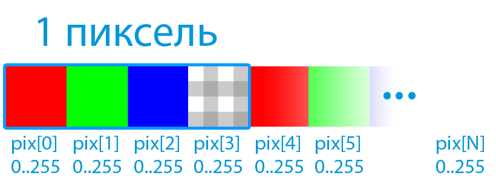
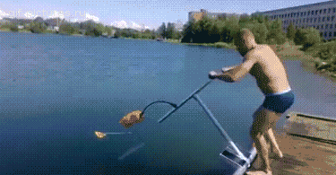
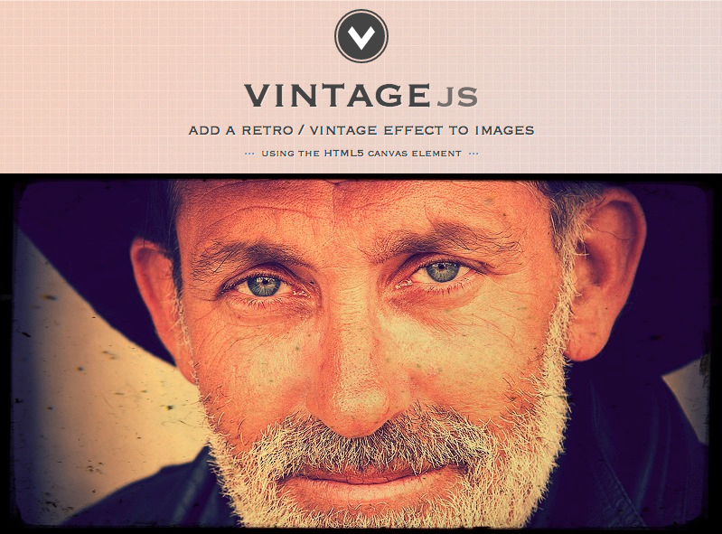
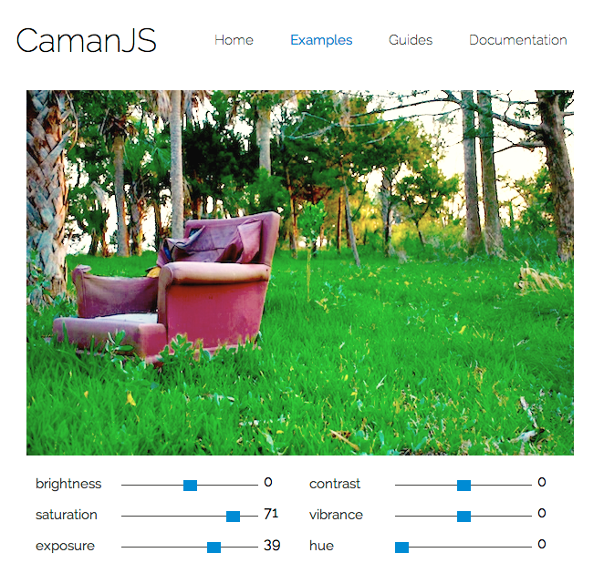
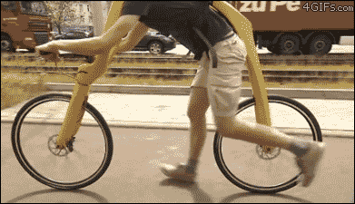
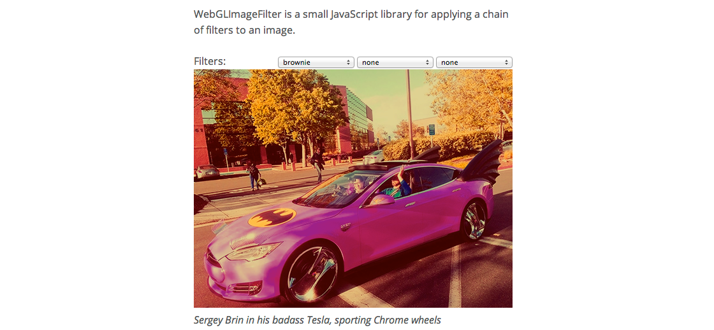

Yours Truly, Famous Inc.
Дмитрий Дудин @nedudi
РИТ++ 2014 Москва



var canvas = document.createElement('canvas');
var context = canvas.getContext('2d');
context.drawImage(img);
var imgd = context.getImageData(0, 0, w, h)
var pixels = imgd.data;



$(img).vintage({
contrast:32,
lighten:0.4,
noise: 20,
desaturate: 0.05
});

Caman("image.jpg", "#canvas", function () {
this
.saturation(20)
.gamma(1.4)
.vignette(300, 60)
.render();
});
precision mediump float;
varying vec2 position;
uniform sampler2D webcam;
void main() {
vec2 p = position;
vec4 color = texture2D(webcam, p);
color.rgb = 1.0 - color.rgb;
gl_FragColor = color;
}
precision mediump float;
varying vec2 position;
uniform sampler2D webcam;
void main() {
vec2 p = position;
vec4 color = texture2D(webcam, p);
color.rgb = 1.0 - color.rgb;
gl_FragColor = color;
}


var filter = new WebGLImageFilter();
filter.addFilter('hue', 180);
filter.addFilter('negative');
filter.addFilter('blur', 7);
var filteredImage = filter.apply(inputImage);
<svg width="400" height="400">
<circle
cx="200"
cy="200"
fill="#3498db"
r="100"/>
</svg>
<svg width="400" height="400">
<defs>
<filter id="f0">
<feGaussianBlur stdDeviation="50" />
</filter>
</defs>
<circle filter="url(#f0)" cx="200" cy="200"
fill="#3498db" r="100"/>
</svg>
<svg width="400" height="400">
<defs>
<filter id="f0">
<feGaussianBlur stdDeviation="50" />
</filter>
</defs>
<circle filter="url(#f0)" cx="200" cy="200"
fill="#3498db" r="100"/>
</svg>
<svg width="400" height="400">
<defs>
<filter id="f0">
<feGaussianBlur stdDeviation="50" />
</filter>
</defs>
<circle filter="url(#f0)" cx="200" cy="200"
fill="#3498db" r="100"/>
</svg>
<svg width="400" height="400">
<defs>
<filter id="f0" >
<feGaussianBlur stdDeviation="40" />
</filter>
</defs>
<circle filter="url(#f0)" cx="200" cy="200"
fill="#3498db" r="100"/>
</svg>
<svg width="1024" height="768">
<image
width="100%"
height="100%"
xlink:href="img/girl.jpg" />
</svg>
<svg width="1024" height="768">
<defs>
<filter id="f1" >
<feGaussianBlur stdDeviation="10" />
</filter>
</defs>
<image filter="url(#f1)" xlink:href="img/girl.jpg"
width="100%" height="100%" />
</svg>
<filter id="f2">
<feGaussianBlur stdDeviation="3" />
<feColorMatrix type="saturate" values="0">
</feColorMatrix>
</filter>
<filter id="f2">
<feGaussianBlur result="a1" stdDeviation="3" />
<feColorMatrix type="saturate" values="0">
</feColorMatrix>
</filter>
<filter id="f2">
<feGaussianBlur result="a1" stdDeviation="3" />
<feColorMatrix in="a1" type="saturate" values="0">
</feColorMatrix>
</filter>
<filter id="f2">
<feGaussianBlur result="a1" stdDeviation="3" />
<feColorMatrix in="a1" type="saturate" values="0">
</feColorMatrix>
</filter>
<feComponentTransfer>
<feFuncR type="linear" slope="5" intercept="-0.5"/>
<feFuncG type="linear" slope="0.2"/>
<feFuncB type="linear" slope="0.2"/>
<feFuncA type="identity"/>
</feComponentTransfer>
<feComponentTransfer>
<feFuncA type="linear" slope="0.5"/>
</feComponentTransfer>
<feComponentTransfer>
<feFuncR type="linear" slope="0"/>
<feFuncG type="linear" slope="0"/>
<feFuncB type="linear" slope="1"/>
</feComponentTransfer>
<feComponentTransfer>
<feFuncR type="linear" slope="10" intercept="-4"/>
<feFuncG type="linear" slope="1.5" intercept="1"/>
<feFuncB type="linear" slope="2" intercept="-1"/>
</feComponentTransfer>
<feComponentTransfer>
<feFuncR type="discrete" tableValues="0 0.5 1" />
<feFuncG type="discrete" tableValues="0 0.5 1" />
<feFuncB type="discrete" tableValues="0 0.5 1" />
</feComponentTransfer>
<feComponentTransfer>
<feFuncR type="table" tableValues="1 0" />
<feFuncG type="table" tableValues="1 0" />
<feFuncB type="table" tableValues="1 0" />
</feComponentTransfer>
<feComponentTransfer>
<feFuncR type="gamma"
amplitude="2" exponent="0.5" offset="0.2"/>
</feComponentTransfer>
<feColorMatrix type="saturate" values="0" />
<feColorMatrix type="saturate" values="4" />
<feColorMatrix type="saturate" values="50" />
<feColorMatrix type="hueRotate" values="0" />
<feColorMatrix type="hueRotate" values="120" />
<feColorMatrix type="hueRotate" values="240" />
<feColorMatrix type="hueRotate" values="320" />
<feColorMatrix type="luminanceToAlpha" />
<feColorMatrix
type="matrix"
values="
0.343 0.669 0.119 0 0
0.249 0.626 0.130 0 0
0.172 0.334 0.111 0 0
0 0 0 1 0
"/>
| R' | | a00 a01 a02 a03 a04 | | R |
| G' | | a10 a11 a12 a13 a14 | | G |
| B' | = | a20 a21 a22 a23 a24 | * | B |
| A' | | a30 a31 a32 a33 a34 | | A |
| 1 | | 0 0 0 0 1 | | 1 |
<feConvolveMatrix order="3"
kernelMatrix="1 -1 1 -1 -1 -1 1 -1 1"/>
1 -1 1
-1 -1 -1
1 -1 1
<feConvolveMatrix order="3"
kernelMatrix="1 -1 1 -1 -0.1 -1 1 -1 1"/>
<feConvolveMatrix order="3"
kernelMatrix="9 0 0 0 1 0 0 0 -9"/>
<feConvolveMatrix order="3"
kernelMatrix="-1 -1 -1 -1 7 -1 -1 -1 -1"/>
<feConvolveMatrix order="5"
kernelMatrix="1 1 1 1 1 1 -2 -2 -2 1 1 -2 0 -2 1 1 -2 -2 -2 1 1 1 1 1 1"/>
<feComposite
in="source1"
in2="source2"
operator="xor"/>
<feBlend
in="source1"
in2="source2"
mode="lighten"/>
<feTile in="source" />
<feColorMatrix type="saturate" values="0">
<animate attributeName="values"/>
</feColorMatrix>
<feColorMatrix type="saturate" values="0">
<animate
attributeName="values"
values="0;2;0"
dur="2s"
repeatCount="indefinite"/>
</feColorMatrix>